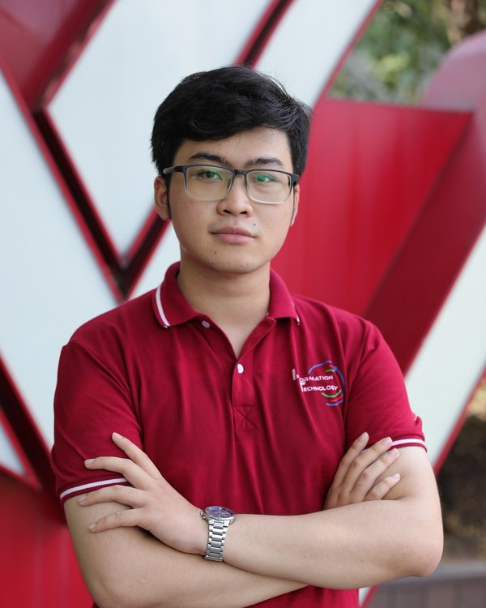

LLM AGENTS · BACKEND SYSTEMS
HarryTrn.
AI Engineer
I am an AI Engineer focused on LLM agents and backend systems, based in Ho Chi Minh City. I built and deployed MailyFlow, a multi-agent email research platform with human approval and 700+ automated tests.
I hold a Bachelor of Information Technology from Van Lang University (2021 – 2025). My earlier work was in computer vision on edge devices (YOLO, ONNX), and I received an Honorable Mention at the ICPC Asia Regional Contest 2023.


Multi-agent LLM pipeline that triages inbound customer emails, runs four parallel research scans and writes cited company briefings, with human approval before any email is drafted or sent. FastAPI backend on Render and Supabase PostgreSQL, validated with 700+ automated tests.

Itinerary engine that groups places into daily plans with K-Means and orders visits with a greedy TSP heuristic; Gemini edits arrive as JSON operations that a validator checks. Contract-first FastAPI backend on Supabase (PostgreSQL, PostGIS).
Fork of Waku, an open-source local-first AI agent, extended with document RAG, chat attachments, web fetch and automations while changing only 50 upstream lines. 326 deterministic tests; p95 25 ms RAG search over 4,000 chunks.
Computer vision system on an Orange Pi 5 that detects children left in vehicles to prevent heatstroke. Optimized YOLOv11n with PyTorch and ONNX to reach real-time performance (> 18 FPS) at 40.73% mAP on edge hardware.
Latest news.
Started ThanhXuan Agent, a fork of the open-source Waku agent with document RAG, chat attachments and automations.
Started MailyFlow, a multi-agent email research platform with human approval, now deployed with 700+ automated tests.
Started Travelink, an AI itinerary planner, as backend engineer in a two-person team.
Completed my graduation thesis, End-to-End AI System for In-Vehicle Safety, and my Bachelor of IT at Van Lang University.
Received an Honorable Mention at the ICPC Asia Regional Contest - Hue City.
Awarded the Consolation Prize at the ICPC Southern Vietnam Regional Contest.
Freelance AI Engineer
- Delivered a vehicle and license plate recognition system to a paying client, from requirements to a working pipeline on video streams.
- Trained YOLOv8 detectors on custom data, added PaddleOCR (ONNX Runtime + TensorRT) for plate text and DeepSORT for real-time vehicle tracking.